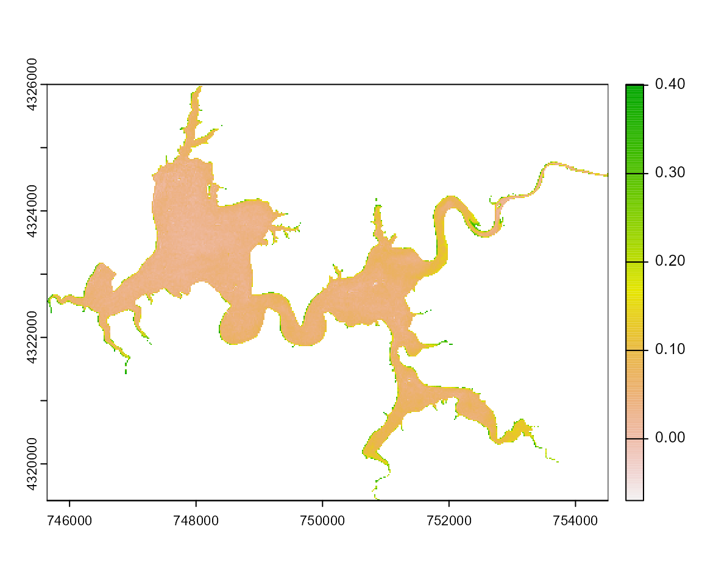

Introduction to the waterquality package
Richard Johansen, Jakub Nowosad, Molly Reif, and Erich Emery
2020-08-11
Source:../vignettes/waterquality_vignette.Rmd
waterquality_vignette.RmdIntroduction
There has been a noticeable rise in the occurrence and severity of cyanobacterial harmful algal blooms (CHABs) in US water bodies (Anderson et al. 2000, Graham 2006, USEPA 2012a). CHABs have the ability to cause adverse effects on human and animal health as well as disrupt local economies (Anderson et al. 2000, Linkov et al. 2009, USEPA 2012a, 2012b). However, in situ monitoring all of the water bodies in the United States would be costly and labor intensive, if even possible. This has given rise to the application of remote sensing data to be used as the standard method for large-scope water quality studies. In general, satellite remote sensing offers cheap (or even free), consistent, near total coverage of the U.S. water bodies. There are multiple freely available data sets from sensors that offer the spatial, spectral, and geographic coverage needed for the study of CHABS, such as Sentinel-2, Landsat-8, MODIS, MERIS, and OLCI (Beck et al. 2016, 2017, Johansen et al. 2018).
A major concern is revisit time worsened by high frequency cloud-cover. The issue is further compounded by the variation in each satellite’s spatial and spectral configuration. So it is proposed that water managers and researchers should utilize all possible sensors in order to increase cloud-free image acquisition as well as capture as much of the spectral-specific water characteristics as possible. This is vital given that each water body contains unique mixtures of bio-chemical variables and physical characteristics. We believe that this would allow for a more comprehensive study and allow for precision treatment of each water body. In order to achieve the goal of precision-based water quality monitoring, we have developed the waterquality package which contains a near-comprehensive list of satellite-derived algorithms for the detection and quantification of the three main quality proxies: Chlorophyll-a, Turbidity, and Phycocyanin (Schalles and Yacobi 2000, Simis et al. 2005, Randolph et al. 2008, Stumpf et al. 2016, Wozniak et al. 2016). The package’s main function is to convert reflectance imagery from operational satellite imagers (Worldview-2, Sentinel-2, Landsat-8, MODIS, MERIS, and OLCI) into any or all of the well-established water quality indices. This final output product is a raster stack of the user-defined water quality indices for a desired area of interest.
Data Acquisition
The first step is to acquire the satellite image of your area of interest. Most satellite imagers have large global coverage, but may be limited depending on your specific location. However, for our example we will use a William H. Harsha Lake (East Fork Lake) located in Southwest Ohio, United States. The imager provided will be a Sentinel-2 product because multiple studies have demonstrated that Sentinel-2 has the optimal spatial and spectral configurations for detecting CHABs in this location (Beck et al. 2017, Johansen et al. 2018, Xu et al. 2018 (in review)).
Sentinel-2 is freely downloadable but does require you to create an account on the European Space Agency’s (ESA) Copernicus Hub (https://scihub.copernicus.eu) or using the United States Geologic Survey’s (USGS) Earth Explorer (https://earthexplorer.usgs.gov). Then you will be able to log into the Open Access Hub and search for available imagery. As of this writing, the ESA mainly distributes uncorrected top of atmosphere (ToA) reflectance products (level 1C), and it is highly recommended to atmospherically correct your imagery to bottom of atmosphere (BoA) reflectance before continuing the process. Raw Sentinel-2 imagery can be difficult to deal with because full scenes are very large and contain bands of differing spatial resolutions. Due to this, we developed a supplemental script called data_preprocessing.R, which converts the full scene imagery into a raster stack tif image of your Area of Interest (AOI).
Atmospheric Correction
Xu et al. 2018 (in review) provides an evaluation of atmospheric correction techniques (FlAASH, QUAC, Sen2Cor, ELM) effects on the detection of CHABs using Sentinel-2. Choosing the appropriate method is user specific, which can be based on image quality, availability of in situ measurements, cost, and industry standards. Currently this process is not automated and may require proprietary software to run such as ENVI’s FLAASH and QUAC. For these reasons we leave this step up to the user to decide and implement, but we have provided some additional information below:
FLAASH: https://www.harrisgeospatial.com/docs/FLAASH.html QUAC: https://www.harrisgeospatial.com/docs/QUAC.html Sen2Cor: http://step.esa.int/main/third-party-plugins-2/sen2cor/ ELM: *Requires in situ calibration targets.
Image Pre-Processing
This supplemental script is designed to help the user pre-process sentinel-2 imagery directly from acquisition or after atmospheric correction. The script was developed using Sentinel-2 as a the example, because this imagery has unique challenges but many functions can be utilized for other sensor’s imagery as well. The data_preprocessing.R script describes multiple functions in the following steps: 1. Define your inputs- This includes the image directory, imagery file extension pattern (.jp2), area of interest (AOI), and preferred projection (in required). 2.The second step is create a list of images from the defined directory, and create a template (same extent and spatial resolution) image based on a single band to be the configuration of the final stacked raster product. For Sentinel-2, it is recommended to use a band with 20-meter resolution (ex. Band 5), because it is more appropriate to upscale the higher resolution 10-meter bands than to downscale the 20-meter bands. 3. The next step is to iterate through the list of rasters to resample (raster::resample()) the imagery using the defined template, crop (raster::crop()) the imagery using the rectangular boundary of the AOI (ex. shapefile of Harsha Lake), and then stack (raster::stack()) the resulting rasters together. This process takes approximately 4-5 minutes to run but converts the large raw sentinel-2 data into tidy TIFF file only a fraction of the size of the full scene stack (3GB+ vs. 15.1MB). 4. Optional: To further reduce the size of the tiff file, we have added the mask (raster::mask())function which eliminates the values of all pixels outside of the physical boundary of the AOI.
5. *Optional: Another way to reduce the size of the imagery or to eliminate erroneous information is to create a subset of the bands (i.e. Sentinel-2 algorithms only use the first nine bands (1:9)). This is also a way to make sure that your input aligns with the algorithms band designations below. 6. Finally, we provide an option to save the final output.
Band Selection and Designation
Due to the fact that each institution and sensors have their own method of “tuning” their data, we provide a description of what the format of each sensor should look like as well as their appropriate band designations. After atmospheric correction and preprocessing each sensor should be in the following format:
| Band Number | Band Name | Band Center (nm) |
|---|---|---|
| 1 | Coastal | 0.425 |
| 2 | Blue | 0.480 |
| 3 | Green | 0.545 |
| 4 | Yellow | 0.605 |
| 5 | Red | 0.660 |
| 6 | Red Edge | 0.725 |
| 7 | NIR-1 | 0.833 |
| 8 | NIR-2 | 0.950 |
| Band Number | Band Name | Band Center (nm) |
|---|---|---|
| 1 | Coastal Blue | 0.443 |
| 2 | Blue | 0.490 |
| 3 | Green | 0.560 |
| 4 | Red | 0.665 |
| 5 | Vegetation Red Edge | 0.705 |
| 6 | Vegetation Red Edge | 0.740 |
| 7 | Vegetation Red Edge | 0.783 |
| 8 | NIR | 0.842 |
| 9 | Narrow NIR | 0.865 |
| Band Number | Band Name | Band Center (nm) |
|---|---|---|
| 1 | Coastal | 0.443 |
| 2 | Blue | 0.482 |
| 3 | Green | 0.562 |
| 4 | Red | 0.655 |
| 5 | NIR | 0.865 |
| 6 | SWIR-1 | 1.609 |
| 7 | SWIR-2 | 2.201 |
| Band Number | Band Name | Band Center (nm) |
|---|---|---|
| 1 | Red | 0.645 |
| 2 | NIR | 0.859 |
| Band Number | Band Name | Band Center (nm) |
|---|---|---|
| 1 | Coastal | 0.413 |
| 2 | Blue | 0.443 |
| 3 | Blue-2 | 0.490 |
| 4 | Yellow | 0.510 |
| 5 | Green | 0.560 |
| 6 | Red | 0.620 |
| 7 | Red-2 | 0.665 |
| 8 | Chlorophyll_Fl | 0.681 |
| 9 | Red-Edge | 0.709 |
| 10 | Red-Edge-2 | 0.754 |
| 11 | Red-Edge-3 | 0.761 |
| 12 | Red-Edge-4 | 0.779 |
| 13 | NIR-1 | 0.865 |
| 14 | NIR-2 | 0.885 |
| 15 | NIR-3 | 0.900 |
| Band Number | Band Name | Band Center (nm) |
|---|---|---|
| 1 | Aerosol Correction | 0.400 |
| 2 | Turbidity | 0.413 |
| 3 | Chlorophyll Absorption Max | 0.443 |
| 4 | High-Chlorophyll | 0.490 |
| 5 | Chlorophyll & sediment | 0.510 |
| 6 | Chlorophyll Reference | 0.560 |
| 7 | Sediment Loading/Phycocyanin | 0.620 |
| 8 | Chlorophyll 2nd Absorption Max | 0.665 |
| 9 | Improved Fluorescence Retrieval | 0.674 |
| 10 | Chlorophyll Fluorescence Peak | 0.681 |
| 11 | Chlorophyll Fluorescence Baseline | 0.709 |
| 12 | O2 Absorption/Clouds | 0.754 |
| 13 | O2 Absorption/Aerosol Correction | 0.761 |
| 14 | Atmospheric Correction | 0.764 |
| 15 | O2A Cloud Top Pressure | 0.768 |
| 16 | Atmospheric/Aerosol Correction | 0.779 |
| 17 | Atmosp. Corr. and Co-registration | 0.865 |
| 18 | Water Vapor Reference | 0.885 |
| 19 | Water Vapor Absorption | 0.900 |
| 20 | Water Vapor Absorption-2 | 0.940 |
| 21 | Atmospheric/Aerosol Correction-2 | 1.020 |
Introduction to the waterquality package
Once the data has been pre-processed and atmospherically corrected, the water quality algorithms can be applied. This package makes use of a suite of well-established algorithms designed for the evaluation of water quality via remotely sensed imagery, which are designed to detect the spectral response of only the upper most portion of the water column (~1 meter). More specifically, these indices were developed for the detection and estimation of the spigments associated with cyanobacteria and harmful algal blooms (CHABs), which include the ubiquitous phytoplankton pigment chlorophyll-a, the cyanobacteria specific pigment phycocyanin, and turbidity used as a generic metric of water clarity (Mishra et al. 2014, Randolph et al. 2008, Simis et al. 2005, Stumpf et al. 2016, Wynne et al. 2008). Studies have demostrated that these proxies can strongly co-vary, but the degree is influenced by water bio-chemistry, geography, and atmospheric conditions (Dokulil and Teubner 2000, Stumpf et al. 2016, Wynne et al. 2012, 2015). These localized variations and the subsequent affect on the algorithms performances are the justification for including the near-comprehensive list of algorithms water quality algorithms. This package is only designed to give water managers or researchers a user-friendly method and set of options for monitoring a given water body for algal blooms.
Algorithms
Currently, we have a list of 45 algorithms that can be applied for the detection of these three metrics. Although, it is important to note that not all sensors are capable of using all algorithms due to their spectral configurations. Each of the algorithms are searchable within the package, where there is a reference to the original paper (Ex. ?Am092Bsub()). Each algorithm is also linked to the original papers metric (Chlorophyll-a, Phycocyanin, Turbidity) by type, which allows users to select all algorithms for that type. The final raster images are in relative index values and are not the estimated chlorophyll-a, phycocyanin, or turbidity values, but can easily be converted in to estimated concentration values using a regression model and in situ measurements as described in Johansen et al. 2018.
wq_calc()
The main function of this package is called wq_calc() which calculates water quality indices by using an reflectance raster stack as an input, user-defined algorithm(s) selection, and satellite configuration selection corresponding to the following three variables: raster_stack, alg, and sat.
-
raster_stack- The input reflectance image to be used in band algorithm calculation. -
alg- Determines the indices to be utilized:- Single Algorithm
- Multiple Algorithm
- Type of Algorithm
- All Possible Algorithms
-
sat- Determines the appropriate spectral configuration and subsequently appropriate algorithms to be calculated from predefined list:- WorldView-2
- Sentinel-2
- Landsat-8
- MODIS
- MERIS
- OLCI
Examples
library(waterquality) library(raster) Harsha <- stack(system.file("raster/S2_Harsha.tif", package = "waterquality"))
Single Algorithm
Harsha_Am092Bsub <- wq_calc(raster_stack = Harsha, alg = "Am092Bsub", sat = "sentinel2") #> Am092Bsub calculated! plot(Harsha_Am092Bsub)

Multiple Algorithms
Harsha_Multiple <- wq_calc(raster_stack = Harsha, alg = c("Am092Bsub", "Go04MCI", "Da052BDA"), sat = "sentinel2") #> Am092Bsub calculated! #> Go04MCI calculated! #> Da052BDA calculated! plot(Harsha_Multiple)

Type of Algorithm
Harsha_PC <- wq_calc(Harsha, alg = "phycocyanin", sat = "sentinel2") #> Am09KBBI calculated! #> Go04MCI calculated! #> Be16FLHBlueRedNIR calculated! #> Be16FLHGreenRedNIR calculated! #> Be16FLHVioletRedNIR calculated! #> Wy08CI calculated! #> Da052BDA calculated! #> Ku15SLH calculated! plot(Harsha_PC)

All Algorithms
Harsha_All <- wq_calc(Harsha, alg = "all", sat = "sentinel2") #> Al10SABI calculated! #> Am092Bsub calculated! #> Am09KBBI calculated! #> Be16FLHviolet calculated! #> Gi033BDA calculated! #> Go04MCI calculated! #> MM12NDCI calculated! #> Be16NDTIblue calculated! #> Be16NDTIviolet calculated! #> Be16FLHBlueRedNIR calculated! #> Be16FLHGreenRedNIR calculated! #> Be16FLHVioletRedNIR calculated! #> Wy08CI calculated! #> Da052BDA calculated! #> Ku15SLH calculated! #> TurbBe16GreenPlusRedBothOverViolet calculated! #> TurbBe16RedOverViolet calculated! #> TurbBow06RedOverGreen calculated! #> TurbChip09NIROverGreen calculated! #> TurbDox02NIRoverRed calculated! #> TurbFrohn09GreenPlusRedBothOverBlue calculated! #> TurbHarr92NIR calculated! #> TurbLath91RedOverBlue calculated! #> TurbMoore80Red calculated! plot(Harsha_All) # Only displays first 12 of 28

Acknowledgements
The waterquality package was developed with funding from the U.S. Army Corps of Engineers. The authors would also like to thank the University of Cincinnati Library’s Research & Data Services the University of Cincinnati’s Space Informatics Lab for their expertise and technical services.
References
Anderson DM, Hoagland P, Kaoru Y,White AW. 2000. Estimated Annual Economic Impact from Harmful Algal Blooms (HABs) in the United States. Woods Hole Oceanographic Institution. Woods Hole (MA).
Beck RA, Zhan S, Liu H, Tong S, Yang B, Xu M, Ye Z, Huang Y, et al. 2016. Comparison of satellite reflectance algorithms for estimating chlorophyll-a in a temperate reservoir using coincident hyperspectral aircraft imagery and dense coincident surface observations. Remote Sens. Environ. 178, 15–30.
Beck RA, Xu M, Zhan S, Liu H, Johansen RA, Tong S, Yang B, Shu S, et al. 2017. Comparison of Satellite Reflectance Algorithms for Estimating Phycocyanin Values and Cyanobacterial Total Biovolume in a Temperate Reservoir Using Coincident Hyperspectral Aircraft Imagery and Dense Coincident Surface Observations. Remote Sensing. 9, 53.
Dokulil MT, Teubner K, 2000. Cyanobacterial dominance in lakes. Hydrobiologia 438, 1–12
Graham JL. Harmful Algal Blooms; USGS Fact Sheet, 2006-3147; USGS: Reston, VA, USA, 2006.
Johansen RA, Beck R, Nowosad J, Nietch C, Xu M, Shu S, Yang B, Liu H, et al. (2018). Evaluating the portability of satellite derived chlorophyll-a algorithms for temperate inland lakes using airborne hyperspectral imagery and dense surface observations. Harmful Algae. 76. 10.1016/j.hal.2018.05.001.
Linkov I, Satterstrom FK, Loney D, Steevans JA. The Impact of Harmful Algal Blooms on USACE Operations; ANSRP Technical Notes Collection; ERDC/TNANSRP-09-1;U.S.Army Engineer Research and Development Center: Vicksburg, MS, USA, 2009.
Mishra S, Mishra DR, Lee ZP.Bio-optical inversion in highly turbid and cyanobacteria dominated waters. IEEE Trans. Geosci. Remote Sens. 2014, 52, 375–388.
Ranghetti L, Busetto L. (2018). sen2r: an R toolbox to find, download and preprocess Sentinel-2 data. R package version 0.3.2. DOI: 10.5281/zenodo.1240384.
Randolph K, Wilson J, Tedesco L, Li L, Lani PD, Soyeux E. Hyperspectral remote sensing of cyanobacteria in turbid productive water using optically active pigments, chlorophyll a and phycocyanin. Remote Sens. Environ. 2008, 112, 4009–4019.
Schalles J, Yacobi Y. 2000. Remote detection and seasonal patterns of phycocyanin, carotenoid and chlorophyll-a pigments in eutrophic waters. Archiv fur Hydrobiologie, Special Issues Advances in Limnology. 55,153–168.
Simis SGH, Peters SWM, Gons HJ.Remote sensing of the cyanobacteria pigment phycocyanin in turbid inland water. Limnol. Oceanogr. 2005, 50, 237–245.
Stumpf RP, Davis TW, Wynne TT, Graham JL, Loftin KA, Johengen TH, Gossiaux D, Palladino D, Burtner A. Challenges for mapping cyanotoxin patterns from remote sensing of cyanobacteria. Harmful Algae 2016, 54, 160–173.
[USEPA] United States Environmental Protection Agency. 2012a. Cyanobacteria and cyanotoxins: Information for drinking water systems. Washington (DC): EPA-810F11001.
[USEPA] United States Environmental Protection Agency. 2012b. The National Lakes Assessment Fact Sheet. National Aquatic Resource Surveys. Washington (DC).
Wynne TT, Stumpf RP, Tomlinson MC, Warner RA, Tester PA, Dyble, J. Relating spectral shape to cyanobacterial blooms in the Laurentian Great Lakes. Int. J. Remote Sens. 2008, 29, 3665–3672.
Wynne TT, Stumpf RP, Tomlinson MC, Dyble J. Characterizing a cyanobacterial bloom in western Lake Erie using satellite imagery and meteorological data. Limnol. Oceanogr. 2012, 55, 2025–2036.
Wynne TT, Stumpf RP. Spatial and Temporal Patterns in the Seasonal Distribution of Toxic Cyanobacteria in Western Lake Erie from 2002–2014. Toxins 2015, 7, 1649–1663.
Wozniak M, Bradtke KM, Darecki M, Krezel A. 2016. Empirical Model for Phycocyanin Concentration Estimation as an Indicator of Cyanobacterial Bloom in the Optically Complex CoastalWaters of the Baltic Sea. Remote Sens. 8, 1–23
Xu Min, Hongxing Liu, Richard Beck, John Lekki, Bo Yang, Song Shu, Emily L. Kang, Robert Anderson, Richard Johansen, Erich Emery, Molly Reif, Teresa Benko. A spectral space partition guided ensemble method for retrieving chlorophyll-a concentration in inland waters from Sentinel-2A satellite imagery. Journal of Great Lakes Research. 2018.
Credit
To cite this library, please use the following entry:
Johansen, R., Nowosad, J., Reif, M., Emery, E. (2018). waterquality: Satellite Derived Water Quality Detection Algorithms. R package version 0.2.2. https://doi.org/10.5281/zenodo.1493487
@Manual{waterquality, title = {waterquality: Satellite Derived Water Quality Detection Algorithms}, author = {Richard Johansen, Jakub Nowosad, Molly Reif, Erich Emery}, year = {2018}, note = {R package version 0.2.2}, doi = {https://doi.org/10.5281/zenodo.1493487}, url = {https://rajohansen.github.io/waterquality}, }